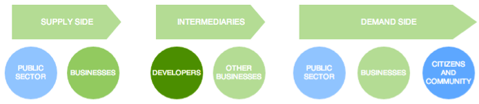
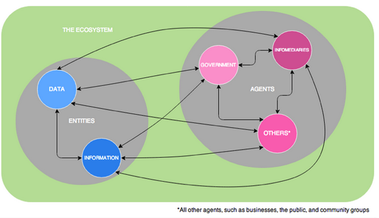
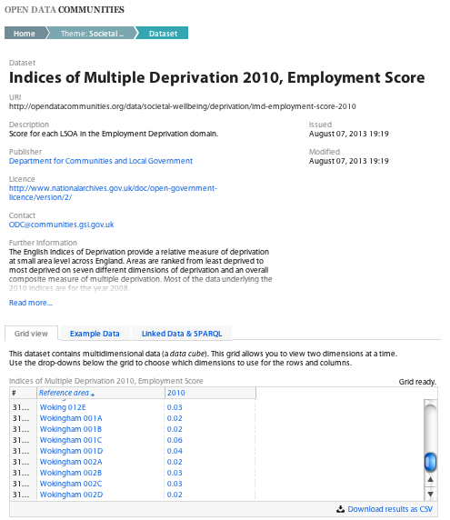

Investigating public participation in open government data
In the summer of 2013, I spent nine weeks as a research intern in the ODI’s offices. During that period, I completed my Masters dissertation in which I investigated public participation in the use of Open Government Data in the United Kingdom. In a previous post I offered some reflections on my experiences as an intern here. Now I want to share more of the "meat" of my research.
I began this project with a background in political studies and a keen interest in Open Data’s (potential) benefits. Informing my work additionally with experience gained through my Masters degree in Digital Asset Management (DAM), I sought to approach this research as an Open Data outsider: I was interested in how the “general public” (that amorphous concept of basically… everyone) could engage with the data being opened by their governments. I started with the understanding that, in our democratic societies, the government's data is the people's data.
I endeavoured to examine the UK’s Open Government Data environment from the horse’s mouth. My research focus was firstly on material produced by the government (such as the extremely useful Open Data White Paper) My secondary research focus was on material about the government’s Open Data approaches (such as the Shakespeare Review). The aim of this approach - balancing government discourse with non-government content - was again to address the linkage between the government and "the people".
Low engagement
My findings (informed, for example, by the Cabinet Office’s Digital Landscape Research, data.gov.uk site usage information, and the "Inaugural Public Sector Benchmark Survey on Open Data") indicated that public participation in the use of Open Government Data - direct engagement with government data by the populace - is limited, specialised, and low.
Open Data engagement tends to come from specialised actors - developers, entrepreneurs, some business specialists, and other tech-savvy agents. But if government data is indeed the people's data, then evidently there should be a desire to widen this engagement. The Uk government has in fact professed the desire, in this regard, to widen participation. Likewise, the United Nations has argued that such engagement is a human right.
So, what might be causing such low participation? Ultimately, addressing this question is the first essential step towards any attempt to expand engagement. Laying the foundations through this question I explored four basic issues that appear to be hampering the expansion of Open Participation:
1. Data/information conflation
I was wary to begin my work with such an epistemological point, but the government’s conflation of notions of data and notions of information seems to be causing something of a “first lap” participation stumbling block. The government’s definition of Open Government Data - as found in the Open Data White Paper - describes making “Public Sector Information” (PSI) open.
PSI is both data - what the government defines as symbols that are “not the product of analysis or interpretation” - and information - what the government defines as that developed through a “process that summarises, interprets or otherwise represents data to convey meaning”.
It may seem trivial, but this sort of basic definitional conflation requires ongoing examination and questioning. If Open Government Data is both data and information, how is it to be used? In what way(s)? Does Open Government Data exist as non-analysed symbols or as processed answers to questions? Can it (comprehensibly) be both at once?
2. Audience
Issue one is epistemological, but issue two certainly is not and stems directly from the data/information conflation: Who is Open Government Data for?
The UK government is fond of saying “everyone”, “the people”, “businesses”, “users”, or similar catch-all terms. Targeting Open Government Data (or anything, for that matter) at “everyone” or at under-defined and -understood audience groups raises a serious concern: not everyone is the same.
Different people have different needs, abilities, and desires. One “product” (Open Government Data en masse) will not meet the needs of “everyone”. If Open Government Data doesn’t speak to - or attempt to speak to - a particular person’s needs and abilities, why should they engage with it?
3. Intermediaries
The UK Open Government Data environment is reliant on the work of intermediaries: specialist actors who manipulate raw data into processed outcomes (e.g. apps). As the Cabinet Office’s Director of Transparency and Open Data put it: “the default model is we get the data out, developers do their stuff, and the public benefits through that”.
But, as even he admits, this is suboptimal from the point of view of assisting citizens with their right to engage with their public data.
The government is not preventing people from participating. However, participation is low and the environment relies on specialist users who develop raw data into more widely usable information outputs.
The layers that develop between the people and their public data (data/information conflation, audience confusion, intermediary actors) are apparent.
4. Overemphasis on data supply
Too much emphasis is placed by the UK government on the supply of data and not enough focus is placed on understanding, generating, and nurturing data demand or data use. If public data is seen as the people's own data, it seems essential that all stages of its lifecycle - production, publication, consumption - be equally nourished.
To accompany the Shakespeare Review, Deloitte produced a market assessment report, which included an illustration of the UK’s current Open Government Data environment.
The diagram below is a redrawing of part of Deloitte's illustration. It is notable how the government sits at the supply end of a linear flow.

There are good mechanisms in place to enable data requests - a way of pushing against the one way flow. However, even these are still about data release: getting this feedback only enables the government to push more data out, it does not address the usability or demand of this data (the right hand side of this diagram).
Digital ecosystem reconceptualisation
In my paper I offered a reconceptualisation of the UK’s current Open Government Data environment. I based this on the thinking of digital ecosystems, which I saw as "the digital counterparts of biological ecosystems" (Brisco and De Wilde): as cyclical, sustainable, demand-driven environments oriented around the agents of various species who are mutually interdependent in the delivery of effective and efficient value (Boley and Chang; Pollock; Harrison, Pardo, and Cook).
I sought to conceptualise the environment using this metaphorical framework. I did not attempt to change the environment or stipulate policy changes, but rather to provide a theoretical framework within which the system as it exists could be reexamined.
My reconceptualisation, in a nutshell, was about ascribing more appreciation to the “things” of Open Government Data, the “doers” of Open Government Data, and the process that relate these to each other.
Using digital ecosystem terminology, I offered an understanding of the environment as being made up of clear and distinct (but related):
- entities (data and information) and
- agents (the government, intermediaries, and other actors including the public, businesses, and community groups).
I assert that, much as in a biological ecosystem, these entities and agents should all interact, interrelate, and benefit from one another. This is illustrated below.

Example
Thinking about Open Government Data as a biological ecosystem is useful. Taking the biological foundations, agents can be imagined as sharks and whales (just as an example!) and entities as crustaceans and fish. A whale needs crustaceans for its sustenance, but sharks require fish and will not thrive if they can only eat crustaceans.
In this example, there is a clear distinction between the demands of various agents - between the demands of the whales and the demands of the sharks. The whole ecosystem interrelates (crustaceans-fish-sharks-whales), exists as one, and relies on feedbacks and interdependencies. Crucially, the system is not dualised: there aren't just “food” entities and “diner” entities. Instead, there are types of food and types of diners: some food entities can be diner entities and some diners can become food.
I applied this structure of interrelationships and interdependencies, supported by clear differentiations, to my thinking of the Open Government Data environment. This is about distinguishing between data and information (so that there is clarity about who might use which entity for what purpose) and between various agents: all are connected, nominally equal, and inter-reliant.
The concept behind this framework is that government does not have to only push data to intermediaries, who push information to consumers. Instead, it is possible for all agents to have the ability to interrelate more dynamically.
Fundamentally, this is about a frame of mind and operation. This is about seeing the Open Government Data environment as one in which greater interrelationships - and wider direct participation - are possible.
When the core of the ecosystem is an inherently shared resource (government data being the people's public data) this is essential. It is essential for the rights of the agents and it is essential for the healthy and sustainable survival of the ecosystem.
OpenDataCommunities
To illustrate this theoretical argument, I made considerable use of the excellent linked data portal developed by the Department for Communities and Local Government (DCLG).
The department's Open Data Communities site, in contrast to the government’s central data portal, operates with a considerable degree of digital ecosystems thinking. On this site data and information are distinguished while still being provided through a single access point.
The screenshot below illustrates this. Note the online viewable data and downloadable CSV data: casual users can get data easily, without a big download, while from the same source a more involved and technically-inclined agent (e.g. a developer) can access and manipulate a CSV download.

Conclusion
The re-conceptualisations I put forward in my paper are not big, but they are significant.
Government data is the people’s data. It is vital to ensure that as many people as possible can access their data and use their data. This means ironing out some of the ongoing and foundational issues at the heart of the current Open Government Data environment. This will ultimately benefit the rights of people to engage with their data. This will also benefit the environment as a whole: as in an ecosystem, sustainability will be bolstered through the interrelated engagement of all agents.